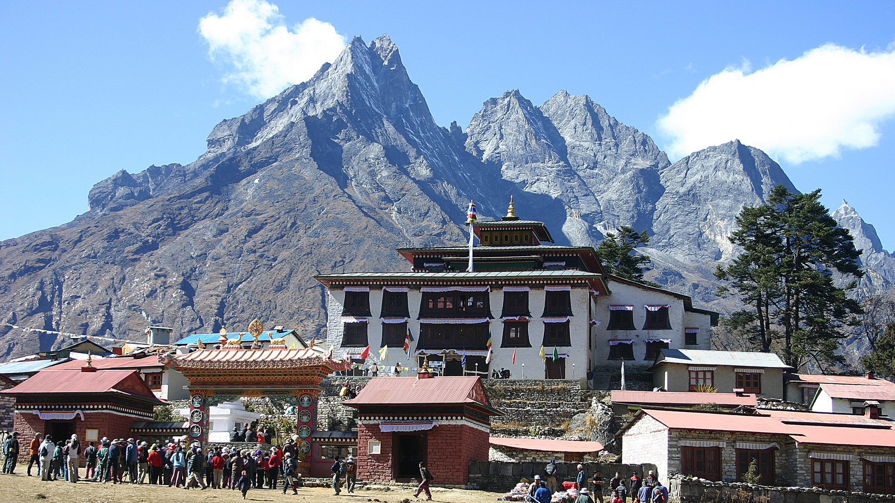
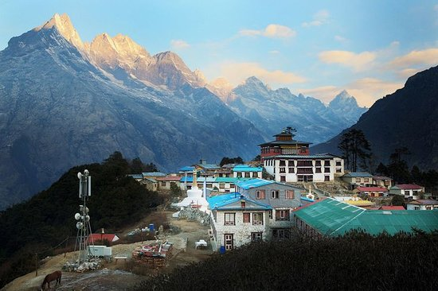
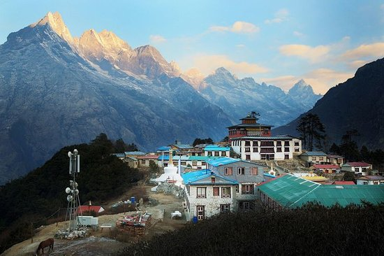

Khumbila across the stunning Ama Dablam
TENGBOCHE
Visit the enchanting Tengboche, on the lap of sacredKhumbila across the stunning Ama Dablam
Tengboche Monastery is one of the most famous monasteries of Nepal, probably because of its unrivalled backdrop of Mount Ama Dablam. Tengboche Monastery is the leading Buddhist centre in the Khumbu with a residing Rinpoche who blesses pilgrims and travelers to the area.
Every October, Tengboche Monastery hosts the colorful Mani Rimdu festival, which is a culmination of Buddhist celebrations with religious gathering, songs, dances, enactments of legends. Visitors are also welcomed to partake in the festivities. Tours of the monastery are conducted every afternoon. Atop a hill across Imja Khola, Tengboche is the most common night halt after Namche. The monastery is perched on a high ridge across the canyon from Khunde. This Buddhist monastery was burnt down in 1989 and rebuilt replacing the old building with a more solid structure.
 Pines, azaleas and colourful mountain rhododendrons surround the attractive gompa (monastery), which rests amid stunning views of Everest, Lhotse and Ama Dablam. Tengboche itself features a rest house and a number of lodges and camping sites. From Tengboche you can continue on to Pheriche, Kala Pattar and the hamlet of Gorakshep. From here, the site of Everest Base Camp is easily accessible, as is the summit of Kala Pattar (5,545 m), from which much of Mt. Everest is clearly visible. However, you must take time to properly acclimatize as the altitude gains are rapid.
Every October, Tengboche Monastery hosts the colorful Mani Rimdu festival, which is a culmination of Buddhist celebrations with religious gathering, songs, dances, enactments of legends. Visitors are also welcomed to partake in the festivities. Tours of the monastery are conducted every afternoon. Atop a hill across Imja Khola, Tengboche is the most common night halt after Namche. The monastery is perched on a high ridge across the canyon from Khunde. This Buddhist monastery was burnt down in 1989 and rebuilt replacing the old building with a more solid structure.
 Pines, azaleas and colourful mountain rhododendrons surround the attractive gompa (monastery), which rests amid stunning views of Everest, Lhotse and Ama Dablam. Tengboche itself features a rest house and a number of lodges and camping sites. From Tengboche you can continue on to Pheriche, Kala Pattar and the hamlet of Gorakshep. From here, the site of Everest Base Camp is easily accessible, as is the summit of Kala Pattar (5,545 m), from which much of Mt. Everest is clearly visible. However, you must take time to properly acclimatize as the altitude gains are rapid.